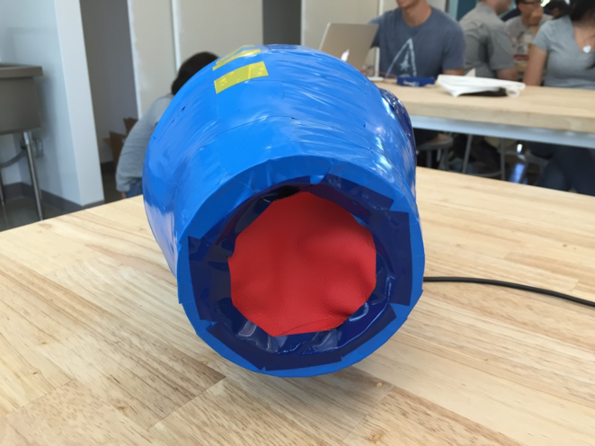
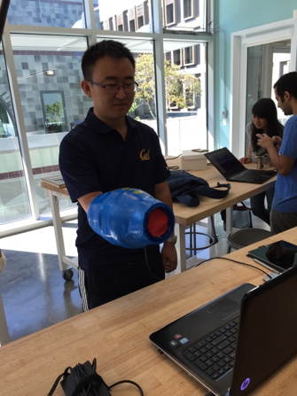

Megabuster Game Controller


Class: ME 290U - Interactive Device Design
Role: Software Engineer, Mechanical Engineer
I designed a game controller to play Megaman Project X . The game buster embodies the actions of the character that you play in the game, Megaman. This moves from a traditional keyboard input to one that is more interactive and reflective of the motions that the character is doing. Therefore, hopefully it makes for a more fun and interactive gameplay.
An accelerometer and button were the two sole inputs used in this project to map motion of the game controller and a "charging" hold. Inputs are read by a KL25Z and mapped using the JavaRobot API to move the character that is seen on the screen.
Click to watch gameplay